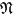
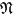

Edition status
 |  |  |  |  |  |
| |  | | | |
| Achilles | |
| Alexander III | |
| Alsted, Johann Heinrich | |
| Banchieri, Adriano | |
| Baryphonus, Henricus | |
| Bender, Christoph | |
| Bernardi, Stefano | |
| Boethius, Anicius Manlius Severinus | |
| Bulich, Albert | |
| Calvisius, Sethus | |
| Chiodino, Giovanni Battista | |
| David | |
| Deutschland | |
| Dilherr, Johann Michael | |
| Diruta, Girolamo | |
| Dümler, Jeremias | |
| Dutch | |
| Folengo, Teofilo | |
| Frankfurt-am-Main | |
| Gott | |
| Greeks | |
| Harnisch, Otto Siegfried | |
| Heiliges Römisches Reich Deutscher Nation | |
| Herbst, Johann Andreas | |
| Italien | |
| Italians | |
| Zum Jungen, Johann Maximilian | |
| Lasso, Orlando di | |
| Lechner, Leonhard | |
| Marci, Cornelius | |
| Marenzio, Luca | |
| Mars | |
| Nürnberg | |
| Priuli, Giovanni | |
| Regnart, Jacob | |
| Saubert, Johannes | |
| Seiffart, Erasmus | |
| Weiß von Limpurg, Konrad | |
| Zacconi, Ludovico | |
| Boethius, Anicius Manlius Severinus |
| Alt, Altus, Altist | |
| Ambitus | |
| Antiphona [Antiphon] | |
| Bass | |
| Bauernlied | |
| Bicinium | |
| Brevis | |
| Cadentia [Cadenz] | |
| Canon | |
| Cantica rustica | |
| Cantilena | |
| Cantio | |
| Cantor | |
| Cantus | |
| Cantus inferior | |
| Cantus prior | |
| Cantus superior | |
| Capellmeister, Chori Director | |
| Carmen | |
| Celeritas | |
| Chor | |
| Choral | |
| Chorus, chorus vocalis, instrumentalis, mutatus, symphoniae, niedriger, hoher, choraliter | |
| Chroma | |
| Clausula | |
| Clausula formalis | |
| Clavis [Clave] | |
| Coloratur | |
| Componist | |
| Composition | |
| Compositus | |
| Concentus | |
| Concerto, Consort, concertiren [concertare] | |
| Concordantia [Concordanz] | |
| Consonantia [Consonanz] | |
| Contrapunctus [Contrapunct] | |
| Contrapunctus coloratus | |
| Contrapunctus fractus | |
| Contrapunctus simplex | |
| Contratenor | |
| Decima | |
| Decimanona | |
| Decimaoctava | |
| Decimaquinta | |
| Decimaseptima | |
| Decimatertia | |
| Decompositus | |
| Diesis | |
| Discantus | |
| Discordantia | |
| Disposition | |
| Dissonantia [Dissonanz] | |
| Dissonantia absoluta | |
| Dissonantia relativa | |
| Duo | |
| Duodecima | |
| Durus | |
| Epidiapente | |
| Exordium | |
| Falso Bordone | |
| Finalis [Final] | |
| Fuga | |
| Fundament, Fundamentbass, Fundamentcorpus, Fundamentinstrument, Fundamentstimme | |
| Fusa | |
| Gang | |
| Gesang | |
| Harfe | |
| Harmonia | |
| Hymnus | |
| Imperfectus | |
| Intervallum [Intervall] | |
| Introitus | |
| Klang | |
| Lied | |
| Ligatura [Ligatur] | |
| Longa | |
| Major | |
| Maxima | |
| Melodia [Melodie, Melodey] | |
| Mensura [Mensur] | |
| Minima | |
| Minor | |
| Modus | |
| Mollis [Moll] | |
| Motette (Moteta, Motecta, Motetta, Muteta, Mutette) | |
| Motus contrarius | |
| Musica | |
| Musica celestis | |
| Musica poetica | |
| Musica practica | |
| Musica theorica | |
| Musicus | |
| Musicus poeticus | |
| Musicus practicus | |
| Musicus theoricus | |
| Mutatio | |
| Nona [None] | |
| Nota [Note] | |
| Nota contra notam [Note gegen Note] | |
| Octava [Diapason] | |
| Organist | |
| Orgel | |
| Pas, Cincquebass | |
| Passus | |
| Pauke | |
| Pausa [Pause] | |
| Penultima | |
| Perfectus | |
| Phrasis | |
| Proportio [Proportion] | |
| Psalmus [Psalm] | |
| Punctus | |
| Quarta [Quarte, Quart] | |
| Quarta falsa | |
| Quinta [Quinte, Quint] | |
| Quinta falsa | |
| Repercussio | |
| Resonantia | |
| Reuterlied | |
| Saenger | |
| Saite, Besaitet | |
| Scala | |
| Schlag | |
| Secunda [Secunde, Sekunda] | |
| Semibrevis Secunda [Sekunde, Sekund] | |
| Semidiapente | |
| Semifusa | |
| Semiminima | |
| Semitonium | |
| Septima [Septime, Sept] | |
| Sexta [Sexte, Sext] | |
| Simplex | |
| Sonus | |
| Sortisatio | |
| Species [Specie, Spezies] | |
| Stimme | |
| Syncopatio | |
| Systema | |
| Tactus, Tact, tactieren, aequalis, inaequalis, elevatio, depressio | |
| Tempus | |
| Tenor | |
| Tertia [Terz] | |
| Tonus [Ton] | |
| Transposition | |
| Tricinium | |
| Tritonus | |
| Trompete, Trompeter [Trommeter] | |
| Undecima | |
| Unisonus [unisono] | |
| Unvollkommen | |
| Vagans | |
| Vielstimmig | |
| Vigesima | |
| Vigesima secunda | |
| Villanella | |
| Vollkommen | |
| Vox [Voce] | |